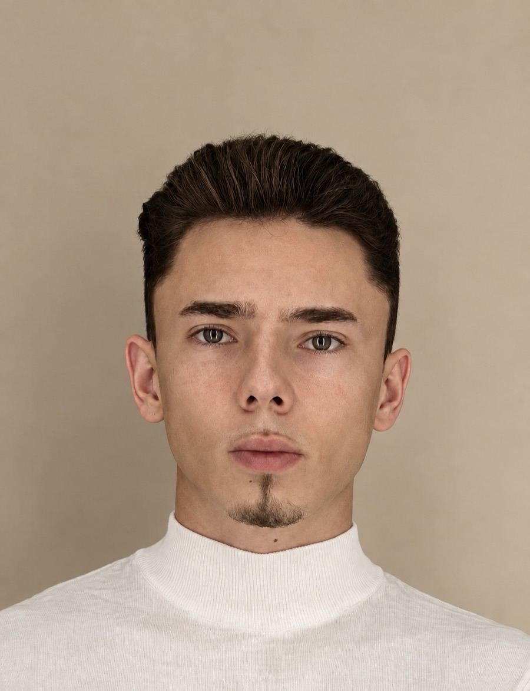

Мы знаем систему изнутри, и быстро найдём решение.
Ваше участие — пара сообщений. Остальное штампуем мы.
Отдать дела KrepkoОдин контакт вместо десятка
За Krepko — человек, который сам прошёл испанскую систему: от языка, до сиесты и бюрократии.

1049 закрытых дел · 6 городов Испании · 4 языка. Теперь это процесс, а не путь вслепую.
Каждое дело — в одних руках от первого сообщения до готового документа.